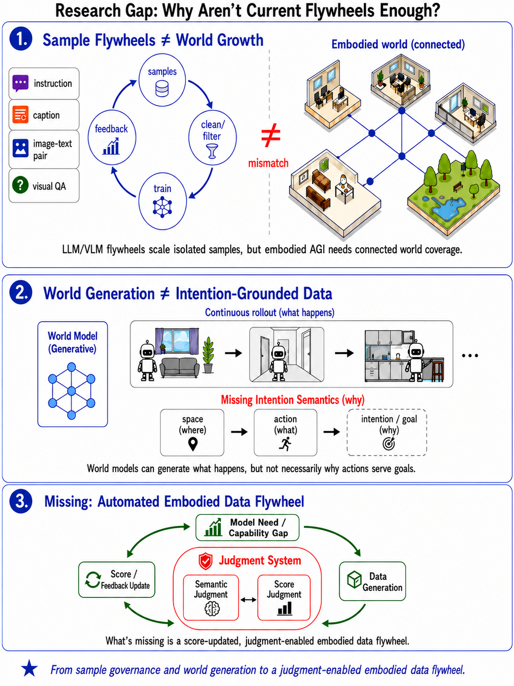
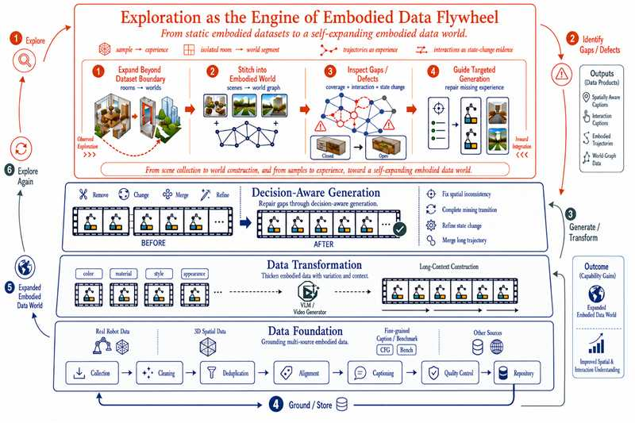

Fixed Pipelines
由人工预设流程，局部优化且难以形成长期反馈。
数据引擎 / DATA ENGINE
From Human-Designed Pipelines to Self-Evolving Data Worlds
把数据系统从被动执行预设流程的基础设施，推进为能够理解自身状态、决定增长方向并从反馈中持续演化的智能系统；当前已形成 15.2M 级多源数据池，并在空间、具身与通用多模态评测中持续验证数据策略。

WHY THIS DIRECTION MATTERS
高质量数据获取越来越昂贵，人工构建逐渐触及规模上限；与此同时，多源数据、处理工具和评测信号仍分散在彼此割裂的流水线中。
真正的问题不只是如何生产更多数据，而是系统能否理解当前数据世界还缺什么、下一步应该增长什么，并根据结果修正演化路径。
由人工预设流程，局部优化且难以形成长期反馈。
理解状态、判断缺口、编排能力并从反馈中学习。

从孤立样本扩充和无目标世界生成，走向由能力缺口、判断系统与反馈共同驱动的具身数据飞轮。
EXPLORATION AS THE ENGINE

以探索发现缺口，以任务意图约束生成，再把质量判断、数据沉淀与模型反馈连接为持续扩展的具身数据世界。
从模型表现和任务反馈中定位覆盖缺口、失败模式与下一轮最值得扩展的能力边界。
让数据选择围绕具体任务与模型状态展开，从广泛堆叠转向有证据的目标化增长。
组合决策感知生成、数据变换和多源基础数据，构造与任务意图一致的训练经验。
将训练与评测反馈重新写入数据策略，使数据系统与模型能力在闭环中协同演化。
MATERIALIZED MULTI-SOURCE POOL
数据池覆盖空间理解、具身规划、affordance、视觉定位、视频推理与通用多模态监督。下面展示代表性 source 的已使用规模与候选池规模。
早期空间智能主干数据，并根据不同训练 base 进行 task-aware 下采样。
从约 2.35M 原始候选中过滤长答案，进入 2.21M pool 后按约 1/10 采样。
清理缺图样本并保持分布结构，形成具身空间理解的重要补充。
按 core、OCR/chart/screen、math 与 other 类别做分层采样。
在约 5.41M region QA 原始 source 上进行 image-balanced 采样。
通过 stratified sampling 保留空间智能任务的代表性覆盖。
EXPERIMENT SERIES / HISTORICAL BESTS
Exp4.17 epoch1 · train_base_5 + HoliSpatial
Exp4.12 epoch3 · SenseNova + CinePile
Exp4.3 epoch1 · ShareRobot affordance
Exp2.1 · MindCube augment
Exp1.2 epoch3 · safe format conversion
Exp1.2 epoch3 · format calibration
Exp1 · unit-fixed core data
Exp5.4 · MindCube CoT 10K derived data
Exp5.1 · MindCube CoT
Exp3.11 + v2.2 route/dist 58K · epoch4
Exp4.3 / Exp4.8 · ShareRobot / Robo2VLM
当前仅有外部 baseline，内部结果待补充
颜色对应不同的 experiment series；各项展示该系列对应实验中的历史最好结果，实验配置与 checkpoint 相互独立。
FROM BROAD ADDITION TO TARGETED PATCH
VSI + MindCube + EgoTaskQA
ScanNet v1 generated VSI
Selective multi-source mix
Selected ScanNet++ geometry
Route / distance repair
Broad Data Addition → Selective Mix → Selected Task-Relevant Data → Targeted Patch